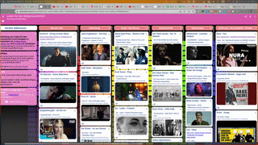
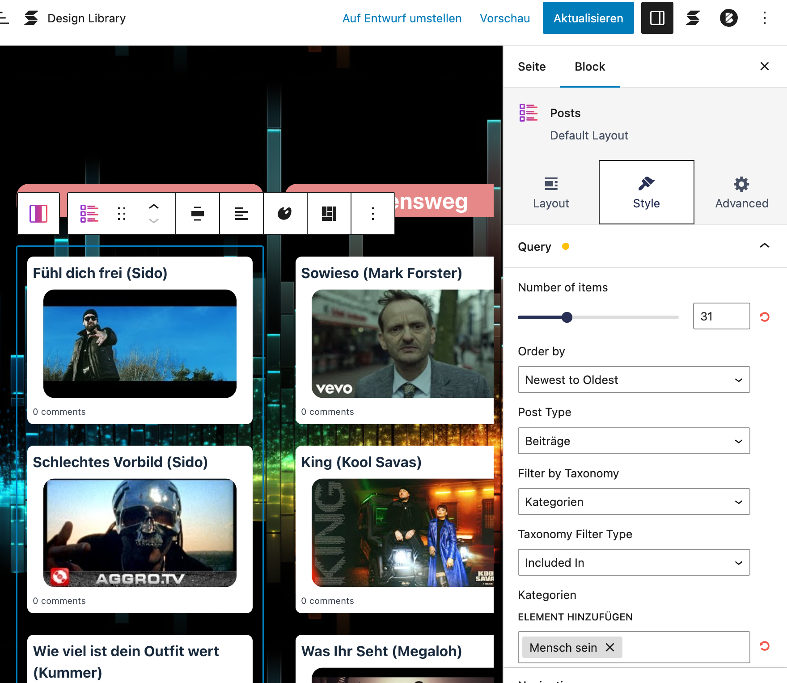
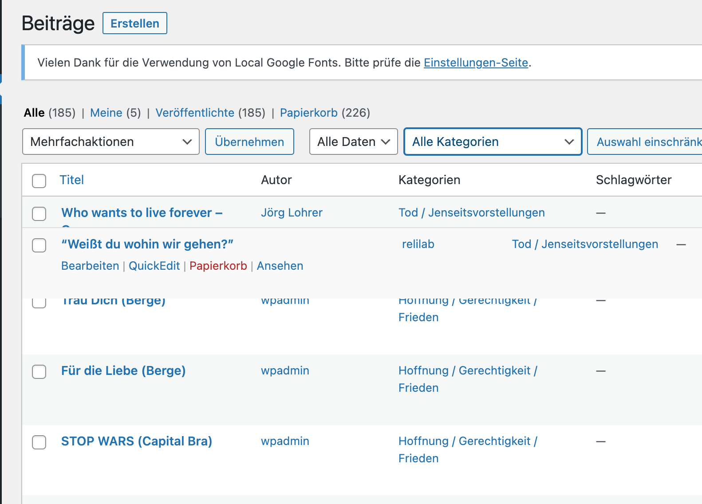

Eine Sammlung von Liedern für den Religionsunterricht ist auf Instagram in Zusammenarbeit von @relimomente @ezpz.lemon.sqz und @colibri260 entstanden und wurde zunächst hier auf TaskCards veröffentlicht.
Weil TaskCards weder exportiert noch importiert werden können, es nur 2 kostenfreie gibt und somit kein #OER damit erstellt werden kann, haben wir uns Gedanken gemacht, wie man das Ganze in Wordpress umsetzen kann:
https://blogs.rpi-virtuell.de/rulieder
Als Bonus sind
- einzelnen Spalten jetzt auch in jeweiligen Kategorienseiten aufrufbar : Mensch sein, Lebensweg, Liebe / Beziehung, Gemeinschaft, Belastungen, Hoffnung / Gerechtigkeit / Frieden, Wunder, Schöpfung, Die Frage nach Gott, Tod / Jenseitsvorstellungen, Biblische Geschichten, Songs zum Kirchenjahr
- Es gibt eine Übersicht zu allen Lieder mit Unterrichtsimpuls von @45minuten.
- Und man kann weitere Lieder einreichen
Alles was es dazu braucht ist:
1. “horizontales Scrollen”

einfach umsetzbar mit verschiedenen WordPress-Plugins. Hier wurde der “horizontal Scroller” von Stackable benutzt.2. Spalten als “posts block”
Es gibt wieder eine Vielzahl von WordPress-Blöcken, die Beiträge (posts) nach Kategorien sortiert in Spalten anzeigbar machen. Hier wurde “posts block” wiederum von Stackable benutzt.

Sortieren der Beiträge in den Spalten
Um die Beiträge nicht nach Erstellungsdatum sondern individuell in ihren Kategorien zu sortieren gibt es das Plugin “Intuitive Custom Post Order”, dass dies per Drag&Drop ermöglicht.

blogs.rpi-virtuell.de
Die Blogs von rpi-virtuell haben alle hier beschriebenen Plugins schon vorinstalliert und müssen nur noch aktiviert werden. Somit steht deinen eigenen WordPress-TaskCards-Padlet-Sammlungen nichts mehr im Wege und du kannst sie kostenfrei und als offene Bildungsmaterialien anderen zugänglich machen.